Compenents for system design architecting
Load Balancing
Working principle
Load balancers work by distributing incoming network traffic across multiple servers or resources to ensure efficient utilization of computing resources and prevent overload. Here are the general steps that a load balancer follows to distribute traffic:
The load balancer receives a request from a client or user. The load balancer evaluates the incoming request and determines which server or resource should handle the request. This is done based on a predefined load-balancing algorithm that takes into account factors such as server capacity, server response time, number of active connections, and geographic location.
The load balancer forwards the incoming traffic to the selected server or resource. The server or resource processes the request and sends a response back to the load balancer. The load balancer receives the response from the server or resource and sends it to the client or user who made the request.

Typically a load balancer sits between the client and the server accepting incoming network and application traffic and distributing the traffic across multiple backend servers using various algorithms. By balancing application requests across multiple servers, a load balancer reduces the load on individual servers and prevents any one server from becoming a single point of failure, thus improving overall application availability and responsiveness.
To utilize full scalability and redundancy, we can try to balance the load at each layer of the system. We can add LBs at three places:
Between the user and the web server Between web servers and an internal platform layer, like application servers or cache servers Between internal platform layer and database.
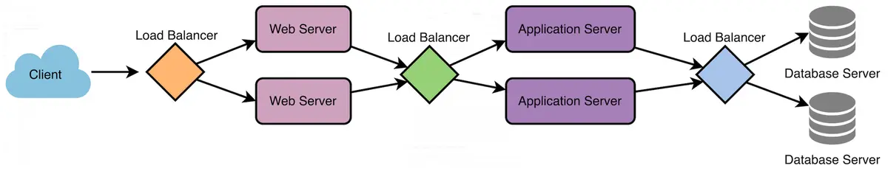
Key terminology and concepts
Load Balancer: A device or software that distributes network traffic across multiple servers based on predefined rules or algorithms.
Backend Servers: The servers that receive and process requests forwarded by the load balancer. Also referred to as the server pool or server farm.
Load Balancing Algorithm: The method used by the load balancer to determine how to distribute incoming traffic among the backend servers.
Health Checks: Periodic tests performed by the load balancer to determine the availability and performance of backend servers. Unhealthy servers are removed from the server pool until they recover.
Session Persistence: A technique used to ensure that subsequent requests from the same client are directed to the same backend server, maintaining session state and providing a consistent user experience.
SSL/TLS Termination: The process of decrypting SSL/TLS-encrypted traffic at the load balancer level, offloading the decryption burden from backend servers and allowing for centralized SSL/TLS management.
Load Balancing Algorithms
RR
It assigns a request to the first server, then moves to the second, third, and so on ..
Pros:
- equal distribution among servers.
- easy implementation and understand
- works well when server has similar capabilities
Cons:
- no load awareness: does not take into account the current load or capacity of each servers. all are treated equally regardless of their current state.
- no sesstion affinity: prob for staeful servers as request may reach to other server.
- performace issue with different capacities.
- Predictable Distribution Pattern: Round Robin is predictable in its request distribution pattern, which could potentially be exploited by attackers who can observe traffic patterns and might find vulnerabilities in specific servers by predicting which server will handle their requests.
Good usecases
Homogeneous Environments: Suitable for environments where all servers have similar capacity and performance. Stateless Applications: Works well for stateless applications where each request can be handled independently.
least connections
The Least Connections algorithm is a dynamic load balancing technique that assigns incoming requests to the server with the fewest active connections at the time of the request useful especially in environments where traffic patterns are unpredictable and request processing times vary.
Pros:
- Load Awareness: Takes into account the current load on each server by considering the number of active connections, leading to better utilization of server resources.
- Dynamic Distribution: Adapts to changing traffic patterns and server loads, ensuring no single server becomes a bottleneck.
- Efficiency in Heterogeneous Environments: Performs well when servers have varying capacities and workloads, as it dynamically allocates requests to less busy servers.
Cons:
- Higher Complexity: More complex to implement compared to simpler algorithms like Round Robin, as it requires real-time monitoring of active connections.
- State Maintenance: Requires the load balancer to maintain the state of active connections, which can increase overhead.
- Potential for Connection Spikes: In scenarios where connection duration is short, servers can experience rapid spikes in connection counts, leading to frequent rebalancing.
Use Cases - Heterogeneous Environments: Suitable for environments where servers have different capacities and workloads, and the load needs to be dynamically distributed. - Variable Traffic Patterns: Works well for applications with unpredictable or highly variable traffic patterns, ensuring that no single server is overwhelmed. - Stateful Applications: Effective for applications where maintaining session state is important, as it helps distribute active sessions more evenly.
Weighted RR
It assigns weights to each server based on their capacity or performance, distributing incoming requests proportionally according to these weights. This ensures that more powerful servers handle a larger share of the load, while less powerful servers handle a smaller share.
Pros
- Load Distribution According to Capacity: Servers with higher capacities handle more requests, leading to better utilization of resources.
- Flexibility: Easily adjustable to accommodate changes in server capacities or additions of new servers.
- Improved Performance: Helps in optimizing overall system performance by preventing overloading of less powerful servers.
Cons
- Complexity in Weight Assignment: Determining appropriate weights for each server can be challenging and requires accurate performance metrics.
- Increased Overhead: Managing and updating weights can introduce additional overhead, especially in dynamic environments where server performance fluctuates.
- Not Ideal for Highly Variable Loads: In environments with highly variable load patterns, WRR may not always provide optimal load balancing as it doesn't consider real-time server load.
Use Cases - Heterogeneous Server Environments: Ideal for environments where servers have different processing capabilities, ensuring efficient use of resources. - Scalable Web Applications: Suitable for web applications where different servers may have varying performance characteristics. - Database Clusters: Useful in database clusters where some nodes have higher processing power and can handle more queries.
weighted least connections
combines the principles of the Least Connections and Weighted Round Robin algorithms. It takes into account both the current load (number of active connections) on each server and the relative capacity of each server (weight)
Pros Dynamic Load Balancing: Adjusts to the real-time load on each server, ensuring a more balanced distribution of requests. Capacity Awareness: Takes into account the relative capacity of each server, leading to better utilization of resources. Flexibility: Can handle environments with heterogeneous servers and variable load patterns effectively. Cons Complexity: More complex to implement compared to simpler algorithms like Round Robin and Least Connections. State Maintenance: Requires the load balancer to keep track of both active connections and server weights, increasing overhead. Weight Assignment: Determining appropriate weights for each server can be challenging and requires accurate performance metrics. Use Cases Heterogeneous Server Environments: Ideal for environments where servers have different processing capacities and workloads. High Traffic Web Applications: Suitable for web applications with variable traffic patterns, ensuring no single server becomes a bottleneck. Database Clusters: Useful in database clusters where nodes have varying performance capabilities and query loads.
IP Hash
The load balancer uses a hash function to convert the client's IP address into a hash value, which is then used to determine which server should handle the request. This method ensures that requests from the same client IP address are consistently routed to the same server, providing session persistence.
Pros Session Persistence: Ensures that requests from the same client IP address are consistently routed to the same server, which is beneficial for stateful applications. Simplicity: Easy to implement and does not require the load balancer to maintain the state of connections. Deterministic: Predictable and consistent routing based on the client's IP address. Cons Uneven Distribution: If client IP addresses are not evenly distributed, some servers may receive more requests than others, leading to an uneven load. Dynamic Changes: Adding or removing servers can disrupt the hash mapping, causing some clients to be routed to different servers. Limited Flexibility: Does not take into account the current load or capacity of servers, which can lead to inefficiencies. Use Cases Stateful Applications: Ideal for applications where maintaining session persistence is important, such as online shopping carts or user sessions. Geographically Distributed Clients: Useful when clients are distributed across different regions and consistent routing is required.
least response time
TODO
DNS LB & HA
RR DNS
Round-robin DNS is a simple load balancing technique in which multiple IP addresses are associated with a single domain name. When a resolver queries the domain name, the DNS server responds with one of the available IP addresses, rotating through them in a round-robin fashion. This distributes the load among multiple servers or resources, improving the performance and availability of the website or service.
However, round-robin DNS does not take into account the actual load on each server or the geographic location of the client, which can lead to uneven load distribution or increased latency in some cases.
Geo distributed DNS servers
By distributing DNS servers across different regions, they can provide faster and more reliable DNS resolution for users located closer to a server.
Geographically distributed servers also offer increased redundancy, reducing the impact of server failures or network outages. If one server becomes unreachable, users can still access the service through other available servers in different locations.
Anycast routing
Anycast routing is a networking technique that allows multiple servers to share the same IP address. When a resolver sends a query to an anycast IP address, the network routes the query to the nearest server, based on factors like network latency and server availability.
Anycast provides several benefits for DNS:
Load balancing: Anycast distributes DNS queries among multiple servers, preventing any single server from becoming a bottleneck. Reduced latency: By directing users to the nearest server, anycast can significantly reduce the time it takes for DNS resolution. High availability: If a server fails or becomes unreachable, anycast automatically redirects queries to the next closest server, ensuring uninterrupted service.
CDN && DNS
A Content Delivery Network (CDN) is a network of distributed servers that cache and deliver web content to users based on their geographic location. CDNs help improve the performance, reliability, and security of websites and web services by distributing the load among multiple servers and serving content from the server closest to the user.
When a user requests content from a website using a CDN, the CDN's DNS server determines the best server to deliver the content based on the user's location and other factors. The DNS server then responds with the IP address of the chosen server, allowing the user to access the content quickly and efficiently.
Uses of load balancing
HA & Fault tolerance:
A load balancer performs Health Checks. It acts as the heartbeat monitor for your cluster. It constantly pings your backend servers ("Are you alive? Can you take a request?"). If a server fails to answer or returns a 5xx error, the LB cuts it off instantly. It stops sending traffic to the corpse and reroutes it to the living.
Horizontal Scalability
The LB acts as the Unified Entry Point (Virtual IP). Clients only know the LB's address. When traffic spikes, you spin up more backend instances, register them with the LB, and boom, you have more capacity.
Blue/Green deployments
Load balancers allow for Connection Draining and strategies like Blue-Green Deployment. You can signal the LB to stop sending new connections to a specific server while allowing existing connections to finish naturally, then take it offline for patching.
Shield
A Load Balancer acts as a Reverse Proxy. It terminates the connection. The client talks to the LB; the LB talks to the server. The internet never touches your backend. Furthermore, the LB can absorb DDoS attacks (Distributed Denial of Service) and filter malicious traffic before it even reaches your expensive application logic.
SSL Termination (The "Offloader")
Encryption is expensive. Handshaking SSL/TLS (decrypting HTTPS traffic) takes significant CPU power. You can offload this to the Load Balancer. This is called SSL Termination. The client speaks HTTPS to the Load Balancer. The Load Balancer decrypts it and speaks HTTP (or lighter encryption) to your backend servers inside your secure private network.
DNS Load Balancing and HA
DNS load balancing and high availability techniques, such as round-robin DNS, geographically distributed servers, anycast routing, and Content Delivery Networks (CDNs), help distribute the load among multiple servers, reduce latency for end-users, and maintain uninterrupted service, even in the face of server failures or network outages.
LB types
Hardware Load Balancing
They use specialized hardware components, such as Application-Specific Integrated Circuits (ASICs) or Field-Programmable Gate Arrays (FPGAs), to efficiently distribute network traffic
Use case: A large e-commerce company uses a hardware load balancer to distribute incoming web traffic among multiple web servers, ensuring fast response times and a smooth shopping experience for customers.
Software Load Balancing
Software load balancers are applications that run on general-purpose servers or virtual machines. They use software algorithms to distribute incoming traffic among multiple servers or resources.
Use case: A startup with a growing user base deploys a software load balancer on a cloud-based virtual machine, distributing incoming requests among multiple application servers to handle increased traffic.
Cloud-based Load Balancing
Cloud-based load balancers are provided as a service by cloud providers. They offer load balancing capabilities as part of their infrastructure, allowing users to easily distribute traffic among resources within the cloud environment.
Use case: A mobile app developer uses a cloud-based load balancer provided by their cloud provider to distribute incoming API requests among multiple backend servers, ensuring smooth app performance and quick response times.
DNS Load Balancing
DNS (Domain Name System) load balancing relies on the DNS infrastructure to distribute incoming traffic among multiple servers or resources. It works by resolving a domain name to multiple IP addresses, effectively directing clients to different servers based on various policies.
Use case: A content delivery network (CDN) uses DNS load balancing to direct users to the closest edge server based on their geographical location, ensuring faster content delivery and reduced latency.
Global Server Load Balancing
GSLB is a technique used to distribute traffic across geographically dispersed data centers. It combines DNS load balancing with health checks and other advanced features to provide a more intelligent and efficient traffic distribution method.
Use case: A multinational corporation uses GSLB to distribute incoming requests for its web applications among several data centers around the world, ensuring high availability and optimal performance for users in different regions.
Hybrid Load Balancing
Hybrid load balancing combines the features and capabilities of multiple load balancing techniques to achieve the best possible performance, scalability, and reliability. It typically involves a mix of hardware, software, and cloud-based solutions to provide the most effective and flexible load balancing strategy for a given scenario.
Use case: A large-scale online streaming platform uses a hybrid load balancing strategy, combining hardware load balancers in their data centers for high-performance traffic distribution, cloud-based load balancers for scalable content delivery, and DNS load balancing for global traffic management. This approach ensures optimal performance, scalability, and reliability for their millions of users worldwide.
Layer 4 Load Balancing
Layer 4 load balancing, also known as transport layer load balancing, operates at the transport layer of the OSI model (the fourth layer). It distributes incoming traffic based on information from the TCP or UDP header, such as source and destination IP addresses and port numbers.
Use case: An online gaming platform uses Layer 4 load balancing to distribute game server traffic based on IP addresses and port numbers, ensuring that players are evenly distributed among available game servers for smooth gameplay.
Layer 7 Load Balancing
Layer 7 load balancing, also known as application layer load balancing, operates at the application layer of the OSI model (the seventh layer). It takes into account application-specific information, such as HTTP headers, cookies, and URL paths, to make more informed decisions about how to distribute incoming traffic.
Use case: A web application with multiple microservices uses Layer 7 load balancing to route incoming API requests based on the URL path, ensuring that each microservice receives only the requests it is responsible for handling.
Stateless and stateful LB
Stateless load balancers operate without maintaining any information about the clients' session or connection state. They make routing decisions based solely on the incoming request data, such as the client's IP address, request URL, or other headers.
stateful load balancing preserves session information between requests. The load balancer assigns a client to a specific server and ensures that all subsequent requests from the same client are directed to that server.
Stateful load balancing can be further categorized into two types:
- Source IP Affinity: This form of stateful load balancing assigns a client to a specific server based on the client's IP address.
- Session Affinity: In this type of stateful load balancing, the load balancer allocates a client to a specific server based on a session identifier, such as a cookie or URL parameter. This method ensures that requests from the same client consistently reach the same server, regardless of the client's IP address.
Stateless load balancing is useful for applications capable of processing requests independently, while stateful load balancing is more appropriate for applications that depend on session data.
load balancing terminology
Availabilty & Realibility
availability is about whether a system is "up," while reliability is about whether it "works correctly" once it’s up
A Car: If you have a car in your driveway ready to drive, it is available. However, if that car stalls every time you hit 60 mph, it is unreliable. A Website: A site that loads but gives you an error every time you click "Checkout" has high availability (it's online) but low reliability (it fails to perform its function).
Upstream and Downstream
The exact meaning depends on the point of reference in the architecture e.g
User requests → Load Balancer → App Server → Database
Upstream = Traffic going OUT(moving away) from your system to another system/service. Downstream = Traffic coming INTO(coming into) your system from another system/service.
From the App Server’s perspective:
Downstream → User requests / Load Balancer (requests coming in) Upstream → Database (requests going out)
From the Load Balancer perspective:
Downstream -> User requests upstream -> App server(backend servers)
LB HA and Fault Tolerance
To ensure high availability and fault tolerance, load balancers should be designed and deployed with redundancy in mind.
Active-passive configuration: one load balancer (the active instance) handles all incoming traffic while the other (the passive instance) remains on standby. If the active load balancer fails, the passive instance takes over and starts processing requests.
Active-active configuration: In this setup, multiple load balancer instances actively process incoming traffic simultaneously. Traffic is distributed among the instances using methods such as DNS load balancing or an additional load balancer layer
Health checks and monitoring: Health checks are periodic tests performed by the load balancer to determine the availability and performance of backend servers. load balancers can automatically remove unhealthy servers from the server pool and avoid sending traffic to them
Synchronization and State Sharing
Centralized configuration management: Using a centralized configuration store (e.g., etcd, Consul, or ZooKeeper) to maintain and distribute configuration data among load balancer instances ensures that all instances are using the same settings and are aware of changes.
State sharing and replication: In scenarios where load balancers must maintain session data or other state information, it is crucial to ensure that this data is synchronized and replicated across instances. This can be achieved through database replication, distributed caching systems (e.g., Redis or Memcached), or built-in state-sharing mechanisms provided by the load balancer software or hardware.
Scalability and Performance
Horizontal scaling: This involves adding more load balancer instances to distribute traffic among them. Horizontal scaling is particularly effective for active-active configurations, where each load balancer instance actively processes traffic.
Vertical scaling: This involves increasing the resources (e.g., CPU, memory, and network capacity) of the existing load balancer instance(s) to handle increased traffic.
Connection and request rate limits: Overloading a load balancer or backend servers can result in decreased performance or even service outages. Implementing rate limiting(such as IP addresses, client domains, or URL patterns) and connection limits at the load balancer level can help prevent overloading and ensure consistent performance.
Caching and content optimization: Load balancers can cache static content, such as images, CSS, and JavaScript files, to reduce the load on backend servers and improve response times. Additionally, some load balancers support content optimization features like compression or minification, which can further improve performance and reduce bandwidth consumption.
LB Latency
While the impact is typically minimal, it is important to consider the potential latency introduced by the load balancer and optimize its performance accordingly.
Geographical distribution: Deploying load balancers and backend servers in geographically distributed locations can help reduce latency for users by ensuring that their requests are processed by a nearby instance.
Connection reuse: Many load balancers support connection reuse or keep-alive connections, which reduce the overhead of establishing new connections between the load balancer and backend servers for each request
Protocol optimizations: Some load balancers support protocol optimizations, such as HTTP/2 or QUIC, which can improve performance by reducing latency and increasing throughput.
Challenges of LB
Single Point of Failure: If not designed with redundancy and fault tolerance in mind, a load balancer can become a single point of failure in the system
Configuration Complexity: Load balancers often come with a wide range of configuration options, including algorithms, timeouts, and health checks. Misconfigurations can lead to poor performance, uneven traffic distribution, or even service outages.
Scalability Limitations: As traffic increases, the load balancer itself might become a performance bottleneck, especially if it is not configured to scale horizontally or vertically.
Latency: Introducing a load balancer into the request-response path adds an additional network hop, which could lead to increased latency. While the impact is typically minimal, it is essential to consider the potential latency introduced by the load balancer and optimize its performance accordingly.
Sticky Sessions Some applications rely on maintaining session state or user context between requests. In such cases, load balancers must be configured to use session persistence or "sticky sessions" to ensure subsequent requests from the same user are directed to the same backend server. However, this can lead to uneven load distribution and negate some of the benefits of load balancing.
Cost: Deploying and managing load balancers, especially in high-traffic scenarios, can add to the overall cost of your infrastructure. This may include hardware or software licensing costs, as well as fees associated with managed load balancing services provided by cloud providers.
Health Checks and Monitoring: Implementing effective health checks for backend servers is essential to ensure that the load balancer accurately directs traffic to healthy instances. Misconfigured or insufficient health checks can lead to the load balancer sending traffic to failed or underperforming servers, resulting in a poor user experience
API Gateway
An API Gateway is a server-side architectural component in a software system that acts as an intermediary between clients (such as web browsers, mobile apps, or other services) and backend services, microservices, or APIs.
Its main purpose is to provide a single entry point for external consumers to access the services and functionalities of the backend system. It receives client requests, forwards them to the appropriate microservice, and then returns the server’s response to the client.
The API gateway is responsible for tasks such as routing, authentication, and rate limiting. This enables microservices to focus on their individual tasks and improves the overall performance and scalability of the system.

Diff between API G/W and LB
| Feature | API Gateway | Load Balancer |
|---|---|---|
| Primary Purpose | Manages, secures, and routes API requests | Distributes incoming network traffic across multiple servers |
| OSI Layer | Typically Layer 7 (Application Layer) | Layer 4 (Transport) and/or Layer 7 |
| Protocol Handling | HTTP, HTTPS, WebSocket, REST, gRPC | TCP, UDP, HTTP, HTTPS |
| Traffic Distribution | Routes based on API path, headers, authentication, version | Routes based on IP, port, protocol |
| Authentication | Built-in authentication (OAuth, JWT, API keys) | No built-in authentication |
| Rate Limiting | Supports throttling and rate limiting | Not typically supported |
| Request Transformation | Can modify headers, payloads, and responses | Cannot modify request/response content |
| Caching | Supports response caching | No caching |
| SSL Termination | Yes | Yes |
| Monitoring & Analytics | Detailed API-level metrics | Basic traffic-level metrics |
| Use Case | Microservices architecture, external API exposure | High availability, horizontal scaling |
| Example | AWS API Gateway, Kong, Apigee | AWS ALB, NLB, HAProxy |
Key Usages of API Gateways
Request Routing: Directing incoming client requests to the appropriate backend service.
Aggregation of Multiple Services: Combining responses from multiple backend services into a single response to the client.
Security Enforcement: Implementing security measures such as authentication, authorization, and rate limiting.
Load Balancing: Distributing incoming requests evenly across multiple instances of backend services to ensure no single service becomes a bottleneck
Caching Responses: Storing frequently requested data to reduce latency and decrease the load on backend services.
Protocol Translation: Converting requests and responses between different protocols used by clients and backend services.
Monitoring and Logging: Tracking and recording request and response data for analysis, debugging, and performance monitoring.
Transformation of Requests and Responses: Modifying the data format or structure of requests and responses to meet the needs of clients or services.
API Versioning: Managing different versions of APIs to ensure backward compatibility and smooth transitions when updates are made.
Rate Limiting and Throttling: Controlling the number of requests a client can make in a given time frame to protect backend services from being overwhelmed.
API Monetization: Enabling businesses to monetize their APIs by controlling access, usage tiers, and billing.
Service Discovery Integration: Facilitating dynamic discovery of backend services, especially in environments where services are frequently scaled up or down.
Circuit Breaker Pattern Implementation: Preventing cascading failures by detecting when a backend service is failing and stopping requests to it temporarily.
Content-Based Routing: Routing requests to different backend services based on the content of the request, such as headers, body, or query parameters.
SSL Termination: Handling SSL/TLS encryption and decryption at the gateway level to offload this resource-intensive task from backend services.
Policy Enforcement: Applying organizational policies consistently across all API traffic, such as data validation, request formatting, and access controls.
Multi-Tenancy Support: Supporting multiple clients or tenants within a single API infrastructure while ensuring data isolation and customized configurations.
A/B Testing and Canary Releases: Facilitating controlled testing of new features or services by directing a subset of traffic to different backend versions.
Localization and Internationalization Support: Adapting responses based on the client's locale, such as language preferences or regional settings.
Reducing Client Complexity: Simplifying the client-side logic by handling complex operations on the server side through the gateway.
Advantages of using API Gateway
- Improved performance - cache responses, rate limit requests, and optimize communication between clients and backend services
- Simplified system design - provides a single entry point for all API requests, making it easier to manage, monitor, and maintain APIs across multiple backend services.
- Enhanced security - can enforce authentication and authorization policies, helping protect backend services from unauthorized access or abuse
- Improved scalability - can distribute incoming requests among multiple instances of a microservice, enabling the system to scale more easily and handle a larger number of requests
- Better monitoring and visibility - can collect metrics and other data about the requests and responses, providing valuable insights into the performance and behavior of the system
- Simplified Client Integration - By providing a consistent and unified interface for clients to access multiple backend services, the API Gateway simplifies client-side development and reduces the need for clients to manage complex service interactions
- Protocol and Data Format Transformation - can convert requests and responses between different protocols (e.g., HTTP to gRPC) or data formats (e.g., JSON to XML), enabling greater flexibility in how clients and services communicate
- API Versioning and Backward Compatibility - can manage multiple versions of an API, allowing developers to introduce new features or make changes without breaking existing clients
- Enhanced Error Handling - can provide a consistent way to handle errors and generate error responses
- Load Balancing and Fault Tolerance - can distribute incoming traffic evenly among multiple instances of a backend service, improving performance and fault tolerance
Disadvantages of using API Gateway
- Additional Complexity - adds an extra layer of complexity to your architecture
- Single Point of Failure - If not configured correctly, the API Gateway could become a single point of failure in your system. If the gateway experiences an outage or performance issues, it can affect the entire system
- Latency - adds an extra hop in the request-response path, which could introduce some latency, especially if the gateway is responsible for performing complex tasks like request/response transformation or authentication
- Vendor Lock-in - managed API Gateway service provided by a specific cloud provider or vendor, you may become dependent on their infrastructure, pricing, and feature set. This could make it more challenging to migrate your APIs to a different provider
- Cost - Running an API Gateway, especially in high-traffic scenarios, can add to the overall cost of your infrastructure
- Maintenance Overhead - API Gateway requires monitoring, maintenance, and regular updates to ensure its security and reliability
- Configuration Complexity - API Gateways often come with a wide range of features and configuration options. Setting up and managing these configurations can be complex and time-consuming, especially when dealing with multiple environments or large-scale deployments.
Network essentials
Differences Between HTTP and HTTPS
HTTP vs HTTPS Comparison
| Feature | HTTP | HTTPS |
|---|---|---|
| Security | No encryption; data is sent in plain text | Encrypted using SSL/TLS protocols |
| Port | 80 | 443 |
| Performance | Slightly faster due to lack of encryption overhead | Slightly slower due to encryption processes |
| SEO Ranking | Lower search engine ranking | Higher search engine ranking |
| Use Cases | Non-sensitive data transmission | Sensitive transactions (e.g., banking, e-commerce) |
TCP vs UDP
these two of the main protocols used for transmitting data over the internet.
TCP: TCP is a connection-oriented protocol that ensures reliable, ordered, and error-checked delivery of a stream of bytes between applications.
Characteristics: - Reliability: TCP ensures that data is delivered accurately and in order, retransmitting lost or corrupted packets. - Connection-Oriented: Establishes a connection between sender and receiver before transmitting data. - Flow Control: Manages data transmission rate to prevent network congestion. - Congestion Control: Adjusts the transmission rate based on network traffic conditions. - Acknowledgements and Retransmissions: Uses acknowledgments to confirm receipt of data and retransmits if necessary.
e.g: Loading a webpage: TCP is used to ensure all web content is loaded correctly and in the right order.
UDP: UDP is a connectionless protocol that sends messages, called datagrams, without establishing a prior connection and without guaranteeing reliability or order.
Characteristics: - Low Overhead: Does not establish a connection, leading to lower overhead and latency. - Unreliable Delivery: Does not guarantee message delivery, order, or error checking. - Speed: Faster than TCP due to its simplicity and lack of retransmission mechanisms. - No Congestion Control: Does not reduce transmission rates under network congestion. e.g: Streaming a live sports event: UDP is used for faster transmission, even if it means occasional pixelation or minor video artifacts.
TCP vs UDP Comparison
| Feature | TCP | UDP |
|---|---|---|
| Reliability | Reliable transmission, ensuring data is delivered accurately and in order | Unreliable transmission; data may be lost or arrive out of order |
| Connection | Connection-oriented; establishes a connection before transmitting data | Connectionless; sends data without establishing a connection |
| Speed and Overhead | Slower due to handshaking, acknowledgments, and congestion control | Faster with minimal overhead, suitable for real-time applications |
| Data Integrity | High data integrity, suitable for applications like file transfers and web browsing | Lower data integrity, acceptable for applications like streaming where perfect accuracy is less critical |
| Use Case Suitability | Used when data accuracy is more critical than speed | Used when speed is more critical than accuracy |
HTTP/1.0 vs HTTP/1.1 vs HTTP/2 vs HTTP/3
Summary:
HTTP has evolved to improve: - ⚡ Performance (faster loading) - 🔐 Security (stronger encryption) - 📡 Efficiency (better bandwidth usage) - 🌍 Scalability (handling modern traffic)
Each version builds upon the previous one to address web scalability challenges.
Comparison:
| Feature | HTTP/1.0 | HTTP/1.1 | HTTP/2 | HTTP/3 |
|---|---|---|---|---|
| Release Year | 1996 | 1997 | 2015 | 2020 |
| Connection Model | New TCP connection per request | Persistent connections (Keep-Alive) | Multiplexed streams over single TCP connection | Multiplexed streams over QUIC (UDP) |
| Protocol Format | Text | Text | Binary | Binary |
| Multiplexing | ❌ No | ❌ No | ✅ Yes | ✅ Yes |
| Header Compression | ❌ No | ❌ Limited | ✅ HPACK | ✅ QPACK |
| Head-of-Line Blocking | Yes | Yes | Yes (TCP-level) | No |
| Transport Protocol | TCP | TCP | TCP | UDP (QUIC) |
| Security | Optional | Optional | Usually HTTPS | Mandatory TLS 1.3 |
| Latency | High | Medium | Low | Very Low |
| Packet Loss Handling | Poor | Poor | Better | Excellent |
| Typical Use Case | Static websites | Dynamic web apps | High-traffic apps | Real-time applications |
HTTP/1.0 (1996)
Characteristics: - One request = one TCP connection - Stateless - Basic headers - High latency
Limitations: - Connection overhead - Slow page loads - Not suitable for modern resource-heavy websites
Use cases: - Simple static websites - Early web applications
HTTP/1.1 (1997)
Improvements Over 1.0: - Persistent connections (Keep-Alive) - Chunked transfer encoding - Host header (virtual hosting) - Better caching
Benefits: - Reduced latency - Efficient resource usage - Enabled shared hosting
Still Has: - Head-of-line blocking - Text-based inefficiencies
Best Used For: - Dynamic websites - E-commerce platforms - APIs
HTTP/2 (2015)
Major Enhancements: - Binary protocol - Multiplexing (multiple requests over one connection) - Header compression (HPACK) - Server Push
Benefits: - Significant performance improvement - Faster page loads - Efficient bandwidth usage
Limitation: - Still uses TCP → TCP-level head-of-line blocking
Best Used For: - Social media platforms - Streaming services - Large web applications
HTTP/3 (2020)
Built On: - QUIC protocol (UDP-based)
Major Advantages: - Eliminates TCP head-of-line blocking - 0-RTT handshake (faster connection setup) - Better packet loss handling - Built-in TLS 1.3 (mandatory encryption)
Benefits: - Lower latency - More resilient on unstable networks - Better mobile performance
Best Used For - Video conferencing (Zoom, Teams) - Online gaming - Live streaming - Real-time apps
Conclusion:
The evolution from HTTP/1.0 to HTTP/3 represents, from simple request-response communication to to high-performance, encrypted, multiplexed, real-time web communication.
URL vs. URI vs. URN
URL: Specifies both the identity and the location of a resource (How and Where). (https://www.example.com/path?query=term#section)
URI: A more comprehensive term covering both URLs (identifying and locating) and URNs (just identifying). (https://www.example.com/path?query=term#section)
URN: Focuses only on uniquely identifying a resource, not on where it is located or how to access it. (urn:isbn:0451450523)
Proxy
forward proxy
A forward proxy(proxy server)is a server that sits in front of one or more client machines and acts as an intermediary between the clients and the internet. When a client machine makes a request to a resource (like a web page or file) on the internet, the request is first sent to the proxy, then forwards the request to the internet on behalf of the client machine and returns the response to the client machine. forward proxies are used to cache data, filter requests, log requests, or transform requests (by adding/removing headers, encrypting/decrypting, or compressing a resource). Proxies can combine the same data access requests into one request and then return the result to the user; this technique is called collapsed forwarding
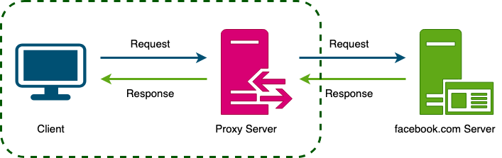
Reverse Proxy
A reverse proxy is a server that sits in front of one or more web servers and acts as an intermediary between the web servers and the Internet. When a client makes a request to a resource on the internet, the request is first sent to the reverse proxy. The reverse proxy then forwards the request to one of the web servers, which returns the response to the reverse proxy. The reverse proxy then returns the response to the client. Contrary to the forward proxy, which hides the client's identity, a reverse proxy hides the server's identity. this can be used for caching, load balancing, or routing requests to the appropriate servers
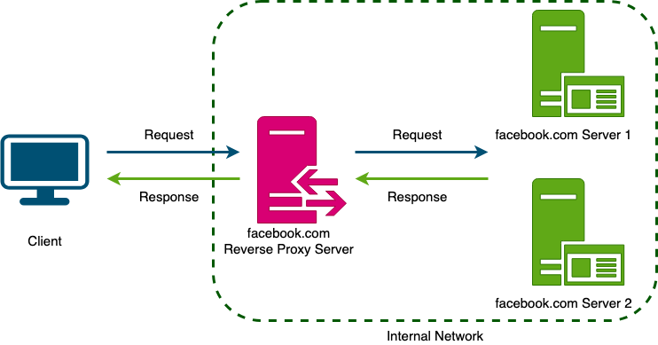
forward vs reverse proxy
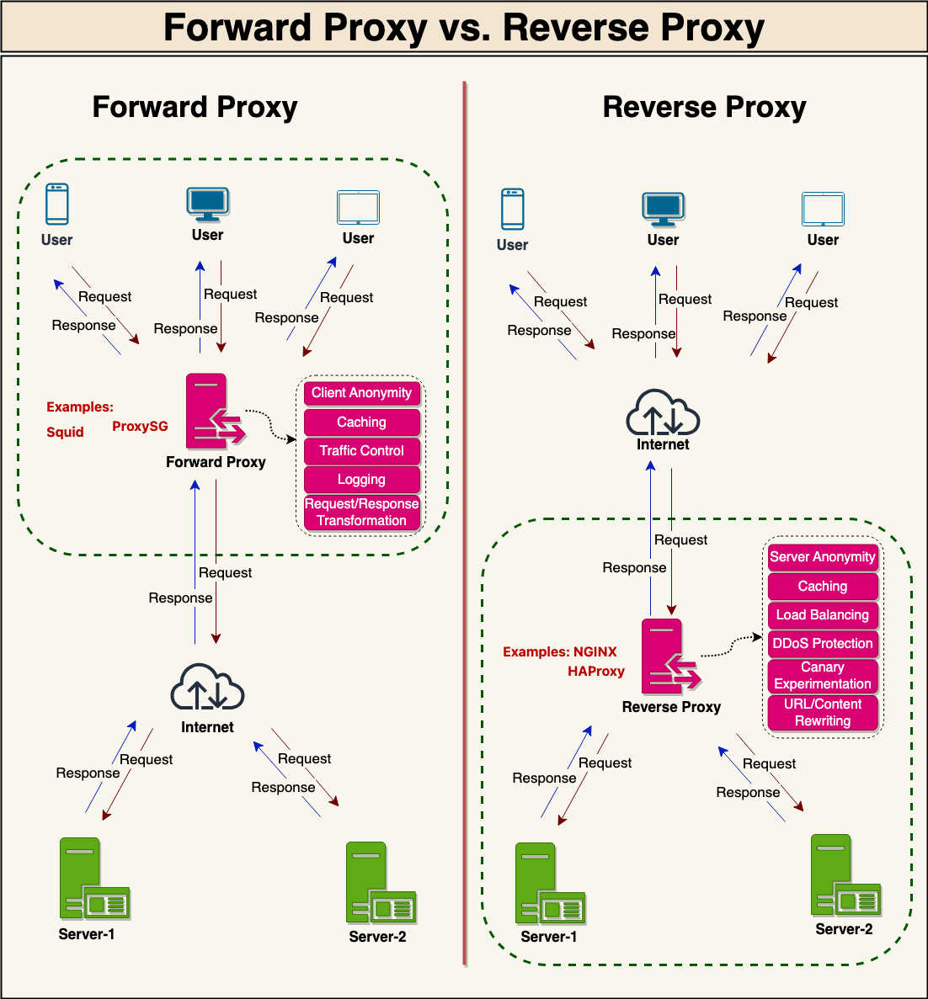
Uses of Proxies
-
Performance enhancement - cache frequently accessed content, reducing the need for repeated requests to the target server.
-
Security enhancement - protective barrier between clients and target servers, protect internal networks from external threats and prevent unauthorized access to sensitive resources
-
Anonymity and privacy - can mask the client's IP address and other identifying information, providing a level of anonymity and privacy when accessing the internet or other network resources
-
Load balancing - Reverse proxy servers can distribute client requests across multiple target servers, preventing individual servers from becoming overburdened and ensuring high availability and performance
-
Centralized control and monitoring - Proxy servers enable centralized control and monitoring of network traffic, facilitating easier administration and management of network resources. Administrators can implement policies, filters, and other configurations on the proxy server to manage traffic and optimize network performance.
-
Content filtering and access control - can be configured to block or filter specific content types, websites, or services based on predetermined policies. This functionality is often used in educational and corporate environments to enforce acceptable use policies or comply with regulatory requirements
-
Content adaptation and transformation - Proxy servers can modify and adapt content to suit specific client requirements, such as altering image formats, compressing data, or adjusting content for mobile or low-bandwidth devices.
-
Logging and auditing - can log and record network traffic, providing a valuable source of information for auditing, troubleshooting, and monitoring purposes
-
SSL termination - Reverse proxy servers can handle SSL/TLS encryption and decryption, offloading this task from the target servers
-
Application-level gateway - can act as an application-level gateway, processing and forwarding application-specific requests and responses between clients and servers. This capability allows proxy servers to provide added functionality, such as authentication, content filtering, or protocol translation, at the application level.
VPN Vs Proxy
| Feature | VPN (Virtual Private Network) | Proxy Server |
|---|---|---|
| Definition | Creates a secure encrypted tunnel between your device and the internet | Acts as an intermediary between client and destination server |
| Encryption | Encrypts all traffic from your device | Usually does NOT encrypt traffic (unless HTTPS proxy) |
| Security Level | High – protects against ISP tracking, hackers, MITM attacks | Low to Moderate – mainly hides IP address |
| IP Masking | Yes – hides your real IP address | Yes – hides your real IP address |
| Scope of Protection | Entire device (all applications) | Specific application (e.g., browser) |
| Performance | Slightly slower due to encryption overhead | Generally faster (no encryption overhead) |
| Use Cases | Secure remote work, public WiFi protection, accessing private networks | Bypassing geo-restrictions, web scraping, basic anonymity |
| Configuration Level | OS-level configuration | Application-level configuration |
| Logging | Depends on provider | Depends on provider |
| Protocol Examples | OpenVPN, IPSec, WireGuard | HTTP Proxy, SOCKS5 |
| Cost | Usually paid service | Often free or low cost |
When to Use VPN?
- Working remotely (secure corporate access)
- Using public Wi-Fi
- Protecting sensitive data
- Securing DevOps/admin access to private servers
When to Use Proxy?
- Bypassing website blocks
- Web scraping
- Testing geo-location-based content
- Lightweight IP masking
Distributed FS
type of file system that manage the storage and retrieval of data across multiple servers and locations
- Cloud Storage Services: Services like Google Drive, Dropbox, and others use distributed file systems to store user files across many servers.
- Big Data Applications: Systems like Hadoop Distributed File System (HDFS) are specifically designed for storing and processing large datasets.
- Content Delivery Networks: Distributing content across different regions to improve access speed and reliability.
- High-Performance Computing: Where large datasets need to be accessed and processed concurrently by multiple systems.
Arch components of DFS
-
Client Interface: - Provides a way for clients (users or applications) to access and manipulate files as if they were on a local file system.
-
Metadata Servers: - Manage metadata about files, such as location information, directory structures, permissions, and file attributes.
-
Data Nodes or Storage Nodes: - Store the actual file data
-
Replication and Redundancy Mechanism: - Ensures data availability and durability by replicating files across multiple nodes.
-
Load Balancer or Scheduler: - Distributes workload evenly across different nodes and manages resource allocation.
-
Network Infrastructure: - Connects all components of the DFS and facilitates communication between them.
-
Synchronization and Consistency Mechanisms: - Ensures that all copies of a file are kept consistent across the system.
-
Fault Tolerance and Recovery Mechanisms: - Handles failures of nodes or network components without data loss or significant downtime.
-
Security Features: - Protects data from unauthorized access and ensures secure communication across the network.
key components
Replication
Purpose: ensuring data availability and durability. By creating multiple copies of data across different nodes, DFS protects against data loss due to node failures
Implementation: Files are often divided into blocks, and each block is replicated across multiple nodes. DFS usually allows configuring the replication factor, i.e., the number of replicas for each block. Intelligent placement of replicas across different nodes or racks to ensure high availability and fault tolerance.
Challenges: Replication consumes network bandwidth, especially during the initial copying of data, Requires additional storage capacity for replicas.
Scalability
Purpose: DFS can grow in capacity and performance as the amount of data or the number of users increases.
Implementation: Horizontal Scaling, Load Distribution, Avoids single points of failure and bottlenecks, allowing for seamless scaling.
Challenges: Scaling up involves efficiently managing metadata so that it doesn't become a bottleneck. Ensuring new nodes are effectively utilized and the load is evenly distributed
Consistency
Purpose: ensuring that all clients see the same data at any given time, despite data replication and concurrent modifications.
Implementation: use different consistency models() strict consistency - where all nodes see the data at the same time eventual consistency - where data updates will eventually propagate to all nodes but are not immediately visible
Challenges: Strong consistency can impact system performance and latency. Ensuring data integrity in the presence of concurrent accesses and updates.
Redunancy & replication
Redunancy
Redundancy refers to the duplication of critical components or functions to increase the reliability, availability, and fault tolerance of a system. Redundancy = Duplicate system components
Benefits:
- Improved reliability: can continue to function despite individual component failures, ensuring the availability of critical services and applications
- Enhanced fault tolerance: a system can better tolerate and recover from faults or failures, essential for maintaining high availability and minimizing downtime, particularly in mission-critical systems
- Increased availability: services and applications remain available even during component failures or maintenance
- Simplified maintenance: maintenance and upgrades to be performed without disrupting system operation
- Disaster recovery: geographically distributed copies of data and resources, organizations can recover more quickly from disasters or catastrophic events that may affect a single location
e.g(infra) - Two web servers in different Availability Zones - Load balancer distributes traffic - If one server fails → traffic shifts automatically
Example: - AWS: EC2 instances in multiple AZs behind an ALB - IBM Cloud: VSI instances behind a Load Balancer
replication
Database replication is the process of copying and synchronizing data from one database to one or more additional databases. Replication = Duplicate data
strategies:
Synchronous: database replication where changes made to the primary database are immediately replicated to the replica databases before the write operation is considered complete. strong consistency between the primary and replica databases Asynchronous: the changes made to the primary database are queued and replicated to the replicas at a later time. Semi-synchronous: synchronous + asynchronous replication. changes made to the primary database are immediately replicated to at least one replica database, while other replicas may be updated asynchronously. the write operation on the primary is not considered complete until at least one replica database has confirmed that it has received and processed the changes. This ensures that there is some level of strong consistency between the primary and replica databases, while also providing improved performance compared to fully synchronous replication
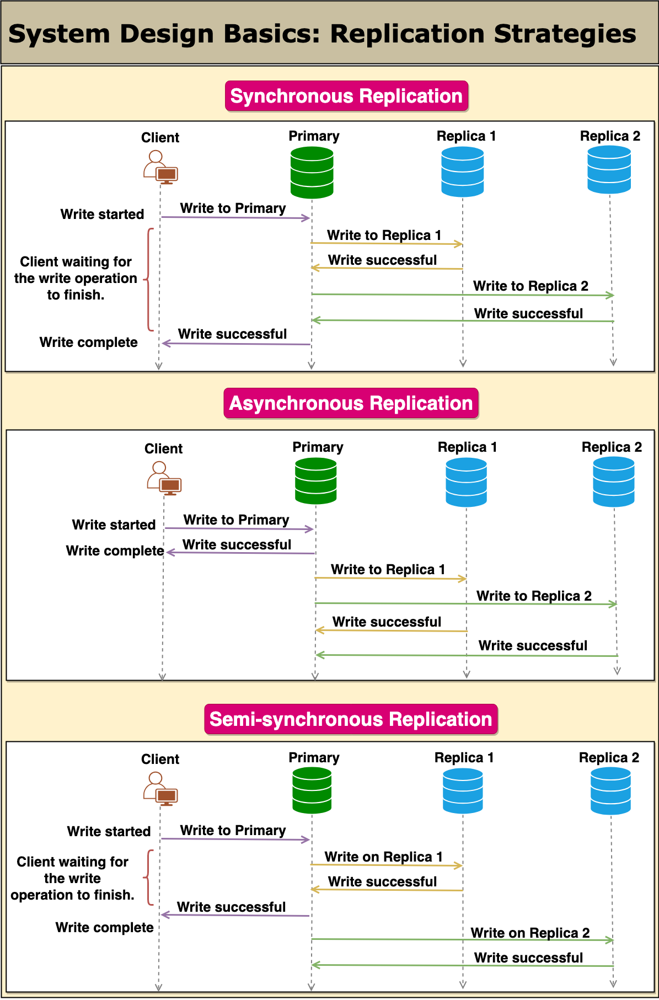
Methods:
- Single-leader replication: one node handles all writes while one or more followers asynchronously or synchronously replicate its state.
- Multi-leader replication: multiple nodes can accept writes; they asynchronously propagate changes to each other, resolving conflicts via timestamps or application logic.
- Leaderless: No designated leader—clients send reads/writes to any replica set and rely on read/write quorums to ensure consistency.
- Chain replication: Nodes are arranged in a fixed chain. Writes flow from head → … → tail; reads are served from the tail, so they see all preceding writes.
- Read-replica replication: A variation of single-leader (primary-backup) replication where the leader handles all writes and one or more replicas serve only read traffic. Replicas continuously pull or receive a stream of write updates from the leader but never accept writes themselves.
- Snapshot replication: Rather than continuously shipping every change, snapshot replication takes a full copy of the source dataset at a specific point in time and pushes that snapshot to one or more targets on a scheduled basis.
Summary:
- Single-leader is the easiest option but is limited by having only one writer.
- Multi-leader boosts write locality at the cost of conflict resolution.
- Leaderless (quorum) removes single points but needs careful quorum tuning.
- Chain gives strong ordering and pipelining, yet ties latency to chain length.
- Read-replica replication is perfect when you need to scale out reads under a single-writer model, but be mindful of replica lag and write bottlenecks.
- Snapshot replication is a straightforward way to distribute a point-in-time copy of data on a schedule, best suited for static or slowly changing - datasets where resource cost and latency between snapshots are acceptable.
Redundancy vs Replication
| Feature | Redundancy | Replication |
|---|---|---|
| Definition | Duplication of critical components or systems to increase availability and eliminate single points of failure | Copying data from one system to another to ensure data availability and consistency |
| Primary Goal | High Availability & Fault Tolerance | Data Consistency & Data Availability |
| Scope | Infrastructure, hardware, network, power, systems | Primarily data (databases, storage, files) |
| Example | Multiple servers behind a load balancer | Primary database replicating to secondary database |
| Data Synchronization | Not always required | Required (synchronous or asynchronous) |
| Failure Handling | If one component fails, another takes over | If primary fails, replica can be promoted |
| Complexity | Infrastructure-level complexity | Data consistency and conflict-handling complexity |
| Cost | Higher (duplicate infrastructure) | Moderate to high (depends on replication strategy) |
| Use Case | Multi-AZ deployment in cloud | Read replicas, disaster recovery database setup |
| Performance Impact | May improve load handling | May improve read performance (read replicas) |
Key Char - DFS
Scalability
ability of a system to handle an increasing workload, either by adding more resources (scaling out) or by upgrading the capacity of existing resources.
Horizontal scaling, also known as scaling out, involves adding more machines or nodes to a system to distribute the workload evenly. This approach allows the system to handle an increased number of requests without overloading individual nodes.
Vertical scaling, or scaling up, refers to increasing the capacity of individual nodes within a system. This can be achieved by upgrading the hardware, such as adding more CPU, memory, or storage. Vertical scaling can help improve the performance of a system by allowing it to handle more workloads on a single node
Availability
Availability is a measure of how accessible and reliable a system is to its users. In distributed systems, high availability is crucial to ensure that the system remains operational even in the face of failures or increased demand
Strategies for Achieving High Availability:
- High Availability through Redundancy and Replication:
Duplicating critical components or entire systems, we can ensure that if one fails, the redundant system takes over seamlessly, avoiding any interruption in service. Replication involves creating multiple copies of data, ensuring that it is available even if one copy becomes inaccessible.
- Availability through Load Balancing:
Load balancing involves distributing workloads across multiple servers, ensuring that no single server is overwhelmed. Through intelligent load-balancing algorithms, organizations can optimize resource utilization, prevent bottlenecks, and enhance high availability by evenly distributing traffic.
Load balancing is particularly useful in web applications, where a large number of users access the system simultaneously. By distributing incoming requests across multiple servers, load balancers ensure that no single server becomes overloaded, leading to improved performance and availability.
- Availability through Distributed Data Storage:
Storing data across multiple locations or data centers enhances high availability by reducing the risk of data loss or corruption. Distributed data storage systems replicate data across geographically diverse locations, ensuring that even if one site experiences an outage, data remains accessible from other locations.
Distributed data storage is crucial for organizations that deal with large volumes of data and cannot afford to lose it. By replicating data across multiple sites, organizations can ensure that data is always available, even in the event of a catastrophic failure at one location.
- Availability and Consistency Models (Strong, Weak, Eventual):
Consistency models define how a distributed system maintains a coherent and up-to-date view of its data across all replicas. Different consistency models provide different trade-offs between availability, performance, and data correctness.
-
Strong consistency ensures that all replicas have the same data at all times, at the cost of reduced availability and performance.
-
Weak consistency allows for temporary inconsistencies between replicas, with the advantage of improved availability and performance.
-
Eventual consistency guarantees that all replicas will eventually converge to the same data, providing a balance between consistency, availability, and performance.
-
Availability through Health Monitoring and Alerts:
Health monitoring involves continuously monitoring system performance, resource utilization, and various metrics to detect any anomalies or potential issues. Alerts are triggered when predefined thresholds are exceeded, allowing IT teams to take immediate action and prevent service disruptions
- Availability through Regular System Maintenance and Updates:
Regular system maintenance and updates are crucial for achieving high availability. By keeping systems up to date with the latest patches, security enhancements, and bug fixes, organizations can mitigate the risk of failures and vulnerabilities that could compromise system availability.
System maintenance involves tasks such as hardware inspections, software updates, and routine checks to ensure that all components are functioning correctly. By staying proactive and addressing any potential issues promptly, organizations can maintain high availability and minimize the impact of system failures.
- Availability through Geographic Distribution:
Geographic distribution is a strategy that involves deploying system components across multiple locations or data centers. This ensures that even if one region or data center experiences an outage, users can still access the system from other geographically dispersed locations.
Geographic distribution is particularly important for organizations with a global presence or those that rely heavily on cloud infrastructure. By strategically placing system components in different geographical areas, organizations can ensure that users from various locations can access the system without any interruptions, regardless of localized incidents or natural disasters.
Latency & performance
ability to handle large amounts of data and traffic
-
Data Locality: storing related data close together or near the nodes that access it most frequently, you can reduce the latency associated with data retrieval and improve overall performance
-
Load Balancing: distributing incoming network traffic or computational workload across multiple nodes or resources to ensure that no single node is overwhelmed
-
Caching Strategies: Caching is a technique used to store frequently accessed data or computed results temporarily, allowing the system to quickly retrieve the data from cache instead of recalculating or fetching it from the primary data source
Concurrancy and cordination
Concurrency control is the process of managing simultaneous access to shared resources or data in a distributed system. It ensures that multiple processes can work together efficiently while avoiding conflicts or inconsistencies.
Concurrency Control
Locking: Locks are used to restrict access to shared resources or data, ensuring that only one process can access them at a time.
Optimistic concurrency control: This approach assumes that conflicts are rare and allows multiple processes to work simultaneously. Conflicts are detected and resolved later, usually through a validation and rollback mechanism.
Transactional memory: This technique uses transactions to group together multiple operations that should be executed atomically, ensuring data consistency and isolation.
Synchronization
Synchronization is the process of coordinating the execution of multiple processes or threads in a distributed system to ensure correct operation
Barriers: Barriers are used to synchronize the execution of multiple processes or threads, ensuring that they all reach a specific point before proceeding.
Semaphores: Semaphores are signaling mechanisms that control access to shared resources and maintain synchronization among multiple processes or threads.
Condition variables: Condition variables allow processes or threads to wait for specific conditions to be met before proceeding with their execution.
Concurrency Control vs. Synchronization The main objective of concurrency control is to manage access to shared resources (like data or hardware resources) in an environment where multiple processes or threads are executing simultaneously.
The purpose of synchronization is to coordinate the timing of multiple concurrent processes or threads. It's about managing the execution order and timing of processes to ensure correct operation.
Coordination Services
Coordination services are specialized components or tools that help manage distributed systems' complexity by providing a set of abstractions and primitives for tasks like configuration management, service discovery, leader election, and distributed locking.
Consistency Models
-
Strong Consistency: After a write operation completes, any subsequent read operation will immediately see the new value.
-
Eventual Consistency: Over time, all accesses to a particular data item will eventually return the last updated value. The time it takes to achieve consistency after a write is not guaranteed
-
Causal Consistency: Operations that are causally related are seen by all processes in the same order. Concurrent operations might be seen in a different order on different nodes.
-
Read-Your-Writes Consistency: Guarantees that once a write operation completes, any subsequent reads (by the same client) will see that write or its effects.
-
Session Consistency: A stronger version of read-your-writes consistency. It extends this guarantee to a session of interactions, ensuring consistency within the context of a single user session
-
Sequential Consistency: Operations from all nodes or processes are seen in the same order. There is a global order of operations, but it doesn't have to be real-time.
-
Monotonic Read Consistency: Ensures that if a read operation reads a value of a data item, any subsequent read operations will never see an older value.
-
Linearizability (Strong Consistency): A stronger version of sequential consistency, it ensures that all operations are atomic and instantly visible to all nodes.
Monitoring and Observability
- Metrics Collection:
Metrics are quantitative measurements that provide insights into the performance, health, and behavior of a distributed system. Collecting and analyzing metrics, such as latency, throughput, error rates, and resource utilization, can help identify performance bottlenecks, potential issues, and areas for improvement. (Prometheus, Graphite, or InfluxDB )
- Distributed Tracing:
Distributed tracing is a technique for tracking and analyzing requests as they flow through a distributed system, allowing you to understand the end-to-end performance and identify issues in specific components or services (Jaeger, Zipkin, or OpenTelemetry)
- Logging:
Logs are records of events or messages generated by components of a distributed system, providing a detailed view of system activity and helping identify issues or anomalies. Collecting, centralizing, and analyzing logs from all services and nodes in a distributed system can provide valuable insights into system behavior and help with debugging and troubleshooting. (Elasticsearch, Logstash, and Kibana (ELK Stack) or Graylog )
- Alerting and Anomaly Detection:
Alerting and anomaly detection involve monitoring the distributed system for unusual behavior or performance issues and notifying the appropriate teams when such events occur. By setting up alerts based on predefined thresholds or detecting anomalies using machine learning algorithms, you can proactively identify issues and take corrective actions before they impact users or system performance (Grafana, PagerDuty, or Sensu )
- Visualization and Dashboards: -
Visualizing metrics, traces, and logs in an easy-to-understand format can help you better comprehend the state of your distributed system and make data-driven decisions. Dashboards are an effective way to aggregate and display this information, providing a unified view of your system's performance and health. (Grafana, Kibana, or Datadog)
Resilence and error handling
Resilience and error handling help minimize the impact of failures and ensure that the system can recover gracefully from unexpected events.
-
Fault Tolerance: Fault tolerance is the ability of a system to continue functioning correctly in the presence of faults or failures.
-
Graceful Degradation: Graceful degradation refers to the ability of a system to continue providing limited functionality when certain components or services fail
-
Retry and Backoff Strategies: transient failures like network issues, timeouts, or service unavailability are common. Implementing retry and backoff strategies can help improve resilience by automatically reattempting failed operations with an increasing delay between retries
-
Error Handling and Reporting:
Proper error handling and reporting are crucial for understanding and addressing issues in distributed systems. By consistently logging errors, categorizing them, and generating alerts when necessary, you can quickly identify and diagnose problems in the system.
- Chaos Engineering:
Chaos engineering is the practice of intentionally injecting failures into a distributed system to test its resilience and identify weaknesses.
fault tolerance vs HA
| Aspect | Fault Tolerance (FT) | High Availability (HA) |
|---|---|---|
| Definition | System continues to operate with no interruption during failures | System remains available with minimal downtime |
| Downtime | Zero or near-zero | Seconds to minutes |
| Failure Impact | Users do not notice failures | Users may notice a brief disruption |
| Redundancy Model | Active–Active (parallel components) | Active–Passive or Active–Active |
| Failover | Instant and automatic | Automatic or manual, slightly delayed |
| Recovery Time | Immediate | Short recovery time |
| Complexity | Very high | Medium |
| Cost | Very high | Moderate |
| Scalability | Harder to scale | Easier to scale |
| Common Technologies | Hardware redundancy, lockstep systems | Load balancers, replicas, health checks |
| Typical Use Cases | Flight control systems, stock trading, nuclear systems | Web apps, APIs, databases, cloud platforms |
| Cloud Example | Dual-write synchronous systems across zones | Multi-AZ load-balanced services |
| Resume-Friendly Line | Designed zero-downtime systems tolerant to component failure | Designed highly available systems with rapid failover |
Security
Authentication
Authentication is the process of verifying the identity of users, services, or nodes before allowing them access to the system.
types of auth
Single-Factor Authentication (SFA): This is like showing just one ID card. It usually involves something you know, like a password or PIN.
Two-Factor Authentication (2FA): This is like showing two forms of ID. For example, entering a password (something you know) and then entering a code sent to your phone
Multi-Factor Authentication (MFA): This is like a high-security check where you need multiple proofs. It could be a combination of a password, a fingerprint, and a security token. (Passwords and PINs, Biometrics, Tokens and Cards, Behavioral Biometrics)
OAuth vs JWT for Authentication:
| Aspect | OAuth 2.0 | JWT (JSON Web Token) |
|---|---|---|
| Type | Authorization framework (often used for authentication) | Token format used for authentication and authorization |
| Purpose | Delegates access to resources without sharing credentials | Securely represents user identity and claims |
| Primary Use | Third-party access (e.g., login with Google/GitHub) | Stateless authentication between client and server |
| Who Defines Access | Authorization Server | Application issuing the token |
| Token Format | Can use opaque tokens or JWTs | Always a JWT (JSON-based, signed) |
| Authentication Role | Indirect (OAuth enables authentication via flows like OIDC) | Direct (JWT carries user identity info) |
| State Management | Can be stateful or stateless | Fully stateless |
| Scalability | High (centralized auth server) | Very high (no server-side session storage) |
| Security Mechanism | Access tokens, refresh tokens, scopes | Signed (and optionally encrypted) tokens |
| Token Revocation | Easier (server can revoke tokens) | Harder (tokens are valid until expiry) |
| Common Flows | Authorization Code, Client Credentials, Device Flow | No flows; just token generation & validation |
| Typical Lifetime | Short-lived access tokens | Short-lived (recommended) |
| Common Use Cases | Social login, API access delegation | Microservices, APIs, mobile & SPA apps |
| Example | Login with Google to access an app | API validates JWT in Authorization header |
| Interview One-Liner | OAuth answers “Can this app access that resource?” | JWT answers “Who is the user and what can they do?” |
Authorization
Authorization, determines what actions or resources the authenticated entity is allowed to access. Authorization is about having the right level of access to resources in a software system File System Permissions, Database Roles, Web Application Privileges.
authentication Vs authorization
| Aspect | Authentication | Authorization |
|---|---|---|
| Definition | The process of verifying who a user is | The process of verifying what access a user has |
| Focus | Identity verification | Access rights and privileges |
| Example | Entering a username and password | Checking if a user can access a specific resource (file, API, database) |
| How It Works | Uses passwords, biometrics, OTPs, certificates, etc. | Uses roles, policies, and permission rules |
| Tools / Methods | Login forms, OTP apps, biometric scanners | Access Control Lists (ACL), Role-Based Access Control (RBAC) |
| Order in Process | Happens first | Happens after successful authentication |
| Key Concern | Ensuring the user’s identity is genuine | Ensuring correct permission and access level |
| Frequency | Usually once per session | Happens multiple times per resource request |
| Dependence | Can exist without authorization in some systems | Requires authentication as a prerequisite |
Data Encryption
Data encryption is the process of converting data into an encoded format that can only be decrypted and read by someone with the correct decryption key Techniques like symmetric and asymmetric encryption, as well as protocols such as TLS/SSL
Symmetric Encryption vs Asymmetric Encryption
| Aspect | Symmetric Encryption | Asymmetric Encryption |
|---|---|---|
| Definition | Uses the same key for encryption and decryption | Uses a pair of keys (public & private) |
| Keys Used | Single shared secret key | Public key + Private key |
| Speed | Very fast | Slower compared to symmetric |
| Security Model | Key must be shared securely | Public key can be shared openly |
| Key Distribution | Difficult and risky | Easy and secure |
| Scalability | Poor for large systems | Better for large/distributed systems |
| Encryption Strength | Strong but depends on key secrecy | Strong with mathematical complexity |
| Typical Use | Bulk data encryption | Key exchange, authentication |
| Common Algorithms | AES, DES, 3DES, Blowfish | RSA, ECC, DSA |
| Data Size Handling | Suitable for large data | Not efficient for large data |
| Computational Cost | Low | High |
| Use in HTTPS | Encrypts actual data | Exchanges symmetric session key |
| Example | Disk encryption, database encryption | SSL/TLS handshake, SSH |
| Failure Impact | Key compromise breaks security | Private key compromise breaks security |
| Interview One-Liner | Fast but key sharing is the challenge | Secure key exchange but computationally expensive |
TLS Handshake
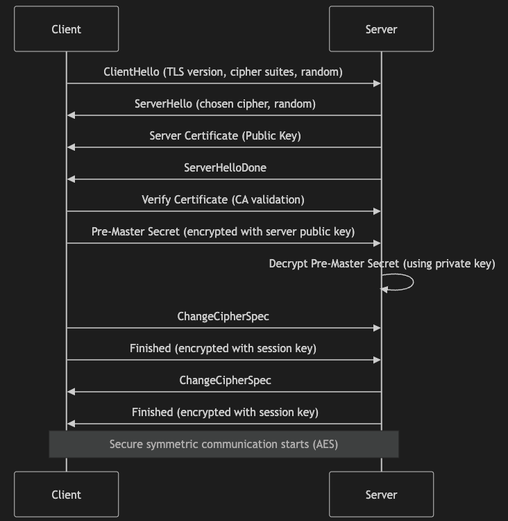
TLS uses asymmetric encryption only to exchange keys, then switches to symmetric encryption for data transfer.
Intrusion Detection and Prevention
Intrusion detection and prevention systems (IDPS) are designed to monitor network traffic, detect malicious activities or policy violations, and take appropriate actions to mitigate potential threats.
DDoS
disrupt normal traffic of a targeted server, service, or network by overwhelming the target or its surrounding infrastructure with a flood of Internet traffic. effectiveness by utilizing multiple compromised computer systems as sources of attack traffic.
How DDoS Attacks Work
How It Happens: Hackers use a network of compromised computers and devices (botnets) to send a flood of internet traffic to a target, like a website or server.
Goal: To overload the server's capacity to handle requests, causing slow service or complete shutdown.
types:
Volumetric Attacks: The most common form, these attacks flood the network with a substantial amount of traffic.
Protocol Attacks: These target network layer or transport layer protocols to consume server resources or bandwidth.
Application Layer Attacks: These are more sophisticated, targeting specific aspects of an application or server.
Mitigations
Network Redundancy: multiple pathways for network traffic
DDoS Protection Services: large-scale network infrastructure capable of absorbing and diffusing attack traffic
Firewalls and Anti-DDoS Software: advanced firewall systems and specific anti-DDoS software can help identify and block attack traffic
Traffic Analysis: Continuously monitoring network traffic can help in identifying anomalies indicative of a DDoS attack.
Responsive Plan: Having a response plan in place, including procedures for identifying, mitigating, and recovering from an attack, is crucial for minimizing damage
Good Security Hygiene: Regularly updating security protocols and educating users about the risks of malware
Scalable Infrastructure: Utilizing cloud services with the ability to scale rapidly can absorb and disperse high traffic loads during an attack
Caching
The cache is a high-speed storage layer that sits between the application and the original source of the data, such as a database, a file system, or a remote web service. When data is requested by the application, it is first checked in the cache. If the data is found in the cache, it is returned to the application. If the data is not found in the cache, it is retrieved from its original source, stored in the cache for future use, and returned to the application.
Key terminology and concepts
-
Cache: A temporary storage location for data or computation results, typically designed for fast access and retrieval.
-
Cache hit: When a requested data item or computation result is found in the cache.
-
Cache miss: When a requested data item or computation result is not found in the cache and needs to be fetched from the original data source or recalculated.
-
Cache eviction: The process of removing data from the cache, typically to make room for new data or based on a predefined cache eviction policy.
-
Cache staleness: When the data in the cache is outdated compared to the original data source.
Advantages:
-
Reduced latency: By serving data from the cache, which is typically faster to access than the original data source
-
Improved system performance: reducing the number of times data needs to be fetched from its original source, this results in a significant reduction in processing time, which leads to a more responsive application
-
Reduced network load: reduce network load by minimizing the amount of data that needs to be transmitted over the network
-
Increased scalability: improve the scalability of an application by reducing the load on the original source.
-
Better user experience: Faster response times and reduced latency can lead to a better user experience.
Types of Caching
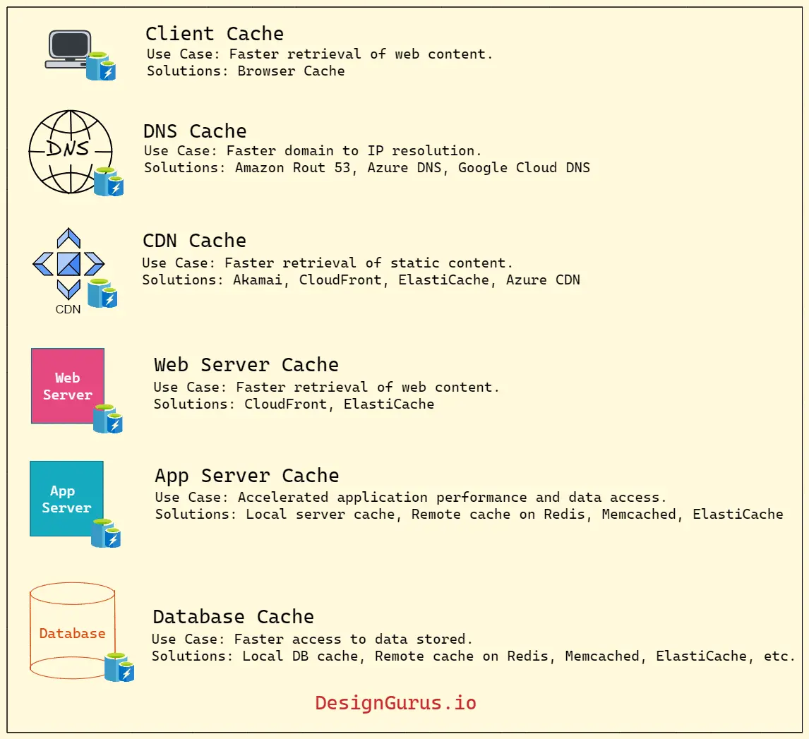
-
In-memory caching: - In-memory caching is useful for frequently accessed data that can fit into the available memory. commonly used for caching API responses, session data, and web page fragments.(Memcached or Redis)
-
Disk caching: - Disk caching is useful for data that is too large to fit in memory or for data that needs to persist between application restarts. commonly used for caching database queries and file system data.
-
Database caching: - This type of caching is useful for data that is stored in a database and frequently accessed by multiple users
-
Client-side caching: - This type of caching occurs on the client device, such as a web browser or mobile app. Client-side caching stores frequently accessed data, such as images, CSS, or JavaScript files, to reduce the need for repeated requests to the server.
-
Server-side caching: - Server-side caching can be used to store frequently accessed data, precomputed results, or intermediate processing results to improve the performance of the server. Examples of server-side caching include full-page caching, fragment caching, and object caching
-
CDN caching: - CDN caching stores data on a distributed network of servers, reducing the latency of accessing data from remote locations.
-
DNS caching: - DNS caching improves the performance of the DNS system by reducing the number of requests made to DNS servers.
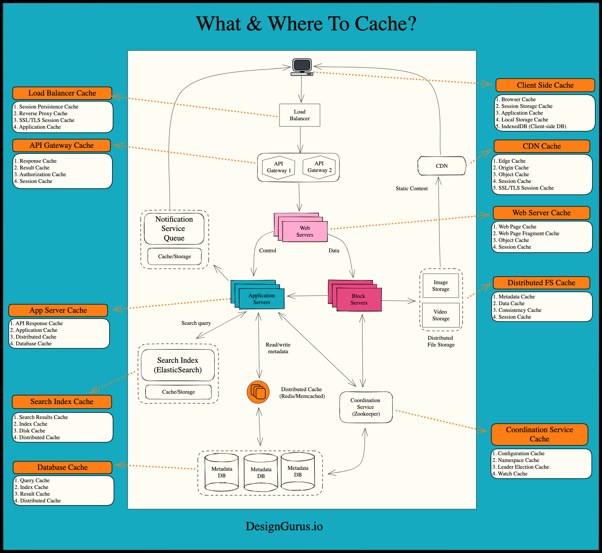
Cache Replacement Policies
cache replacement policy to determine which items in the cache should be removed when the cache becomes full
-
Least Recently Used (LRU): - LRU is a cache replacement policy that removes the least recently used item from the cache when it becomes full
-
Least Frequently Used (LFU): - removes the least frequently used item from the cache when it becomes full
-
First In, First Out (FIFO): - removes the oldest item from the cache when it becomes full.
-
Random Replacement: - removes a random item from the cache when it becomes full
Cache Invalidation
While caching can significantly improve performance, we must ensure that the data in the cache is still correct—otherwise, we serve out-of-date (stale) information (you risk presenting users with wrong information or invalid results). This is where cache invalidation comes in.
When the underlying data changes—say a product’s price updates in your database—you must mark or remove the old (cached) data so users don’t see stale information. This process is called “cache invalidation.”
Large systems often have multiple caching layers. If any of these layers serve old data while others serve new data, users can encounter conflicting information.
Cache invalidation strategies (e.g., time-to-live/TTL, manual triggers, event-based invalidation) are designed to minimize the performance cost of continuously “refreshing” the cache.
- Write-through cache
Under this scheme, data is written into the cache and the corresponding database simultaneously. The cached data allows for fast retrieval and, since the same data gets written in the permanent storage, we will have complete data consistency between the cache and the storage. Since every write operation must be done twice before returning success to the client, this scheme has the disadvantage of higher latency for write operations.
- Write-around cache
This technique is similar to write-through cache, but data is written directly to permanent storage, bypassing the cache. This can reduce the cache being flooded with write operations that will not subsequently be re-read, but has the disadvantage that a read request for recently written data will create a “cache miss” and must be read from slower back-end storage and experience higher latency.
- Write-back cache
Under this scheme, data is written to cache alone, and completion is immediately confirmed to the client. The write to the permanent storage is done based on certain conditions, for example, when the system needs some free space. This results in low-latency and high-throughput for write-intensive applications; however, this speed comes with the risk of data loss in case of a crash or other adverse event because the only copy of the written data is in the cache.
- Write-behind cache
Under this scheme, data is written to cache alone, and completion is immediately confirmed to the client. but it is not immediately written to the permanent storage.
In write-back caching, data is only written to the permanent storage when it is necessary for the cache to free up space, while in write-behind caching, data is written to the permanent storage at specified intervals.
Cache Invalidations Methods
Purge: removes cached content for a specific object, URL, or a set of URLs.(hard delete)
Refresh: When a refresh request is received, the cached content is updated with the latest version from the origin server, ensuring that the content is up-to-date.
Ban: The ban method invalidates cached content based on specific criteria, such as a URL pattern or header
(TTL) expiration: This method involves setting a time-to-live value for cached content, after which the content is considered stale and must be refreshed
Cache Read Strategies
Read through cache
A read-through cache strategy is a caching mechanism where the cache itself is responsible for retrieving the data from the underlying data store when a cache miss occurs. This approach helps to maintain consistency between the cache and the data store, as the cache is always responsible for retrieving and updating the data. It also simplifies the application code since the application doesn't need to handle cache misses and data retrieval logic.
Read aside cache
application is responsible for retrieving the data from the underlying data store when a cache miss occurs

CDN
A Content Delivery Network (CDN) is a distributed network of servers strategically located across various geographical locations to deliver web content, such as images, videos, and other static assets, more efficiently to users. The primary purpose of a CDN is to reduce latency and improve the overall performance of web applications by serving content from the server nearest to the user. CDNs can also help improve reliability, availability, and security of web applications.
Key terminology and concepts
-
Point of Presence (PoP): PoPs are strategically placed close to end-users to minimize latency and improve content delivery performance.
-
Edge Server: An edge server is a CDN server located at a PoP, responsible for caching and delivering content to end-users. These servers store cached copies of the content, reducing the need to fetch data from the origin server.
-
Origin Server: The origin server is the primary server where the original content is stored(website's content, including HTML files, images, stylesheets, JavaScript, videos, and other digital assets). CDNs fetch content from the origin server and cache it on edge servers for faster delivery to end-users.
-
Cache Warming: Cache warming is the process of preloading content into the edge server's cache before it is requested by users, ensuring that the content is available for fast delivery when it is needed.
-
Time to Live (TTL) : TTL is a value that determines how long a piece of content should be stored in the cache before it is considered stale and needs to be refreshed from the origin server.
-
Anycast: Anycast is a network routing technique used by CDNs to direct user requests to the nearest available edge server, based on the lowest latency or the shortest network path.
-
Content Invalidation: Content invalidation is the process of removing or updating cached content when the original content on the origin server changes, ensuring that end-users receive the most up-to-date version of the content.
-
Cache Purging: Cache purging is the process of forcibly removing content from the edge server's cache, usually triggered manually or automatically when specific conditions are met.
Benefits of using a CDN
CDNs play a crucial role in enhancing the performance, reliability, and security of modern web applications. By serving content from geographically distributed edge servers, CDNs can provide users with a fast and seamless experience, while reducing load on origin servers and protecting against security threats. Here are the top benefits of using CDNs:
-
Reduced latency: By serving content from geographically distributed edge servers, CDNs reduce the time it takes for content to travel from the server to the user, resulting in faster page load times and improved user experience.
-
Improved performance: CDNs can offload static content delivery from the origin server, freeing up resources for dynamic content generation and reducing server load. This can lead to improved overall performance for web applications.
-
Enhanced reliability and availability: With multiple edge servers in different locations, CDNs can provide built-in redundancy and fault tolerance. If one server becomes unavailable, requests can be automatically rerouted to another server, ensuring continuous content delivery.
-
Scalability: CDNs can handle sudden traffic spikes and large volumes of concurrent requests, making it easier to scale web applications to handle growing traffic demands.
-
Security: Many CDNs offer additional security features, such as DDoS protection, Web Application Firewalls (WAF), and SSL/TLS termination at the edge, helping to safeguard web applications from various security threats.
CDN Routing and Request Handling
CDN routing is the process of directing user requests to the most suitable edge server. Routing decisions are typically based on factors such as network latency, server load, and the user's geographical location
Anycast Routing: In anycast routing, multiple edge servers share a single IP address. When a user sends a request to that IP address, the network's routing system directs the request to the nearest edge server based on network latency or the number of hops.
DNS-based Routing: With DNS-based routing, when a user requests content, the CDN's DNS server responds with the IP address of the most suitable edge server. This approach can take into account factors such as geographical proximity and server load to select the best edge server for handling the request.
GeoIP-based Routing: In this approach, the user's geographical location is determined based on their IP address. The request is then directed to the nearest edge server in terms of geographical distance, which often corresponds to lower network latency.
Caching Mechanisms
Edge servers cache content to reduce latency and offload traffic from the origin server. Various caching mechanisms can be employed to determine what content is stored, when it is updated, and when it should be removed from the cache
Time-to-Live (TTL): TTL is a value set by the origin server that determines how long a piece of content should be stored in the cache before it is considered stale and needs to be fetched again from the origin server.
Cache Invalidation: Cache invalidation is the process of removing content from the cache before its TTL expires. This is typically done when content is updated or deleted on the origin server and needs to be reflected immediately in the CDN.
Cache Control Headers: Cache control headers are used by the origin server to provide instructions to the CDN regarding caching behavior. These headers can dictate the cacheability of content, its TTL, and other caching-related settings.
CDN Network Topologies
Flat Topology: In a flat topology, all edge servers in the CDN are directly connected to the origin server.
Hierarchical Topology: In a hierarchical topology, edge servers are organized into multiple tiers, with each tier being responsible for serving content to the tier below it. This approach can improve scalability by distributing the load among multiple levels of servers and reducing the number of direct connections to the origin server.
Mesh Topology: In a mesh topology, edge servers are interconnected, allowing them to share content and load with each other. This approach can enhance the redundancy and fault tolerance of the CDN, as well as improve content delivery performance by reducing the need to fetch content from the origin server.
Hybrid Topology: A hybrid topology combines elements from various topologies to create an optimized CDN architecture tailored to specific needs. For example, a CDN could use a hierarchical structure for serving static content, while employing a mesh topology for dynamic content delivery.
Push CDN vs Pull CDN
| Aspect | Push CDN | Pull CDN |
|---|---|---|
| Definition | Content is manually uploaded ("pushed") to the CDN server in advance. | CDN automatically fetches ("pulls") content from the origin server when requested. |
| How It Works | You upload files to the CDN storage. CDN serves files directly from its edge locations. | User requests content → CDN checks cache → If not available, CDN pulls from origin → Caches and serves it. |
| Content Update | Requires manual re-upload when content changes. | Automatically updates when cache expires or is purged. |
| Best For | Static content (images, videos, downloads, software packages). | Dynamic or frequently changing content (websites, APIs, blogs). |
| Origin Server Load | Very low, since CDN already has the content. | Higher initially (on first request or cache miss). |
| Setup Complexity | Slightly more setup (need upload process or pipeline). | Easier setup (just configure origin server). |
| Storage Requirement | Requires CDN storage space. | No extra storage management required. |
| Control Over Content | Full control over what is uploaded. | CDN decides what to cache based on requests. |
| Cost Consideration | Can be cheaper for large static assets with predictable traffic. | May incur more origin bandwidth cost on cache misses. |
| Example Use Case | Hosting software downloads, media streaming files, large static assets. | Hosting a website where content updates frequently. |
Advantages and Disadvantages of Push CDN vs Pull CDN
| CDN Type | Advantages | Disadvantages |
|---|---|---|
| Push CDN | • Reduced load on origin server • Faster delivery for large static files • Full control over uploaded content • Predictable performance • Good for high-traffic static assets |
• Manual upload required • Content updates need re-uploading • Extra storage management • Slightly more operational overhead • Not ideal for frequently changing content |
| Pull CDN | • Easy setup (just configure origin) • Automatically fetches updated content • No manual upload process • Good for dynamic or frequently updated websites • Lower operational effort |
• Initial request may cause latency (cache miss) • Higher load on origin during cache misses • Less control over what gets cached • Possible stale content if cache settings are incorrect • Bandwidth costs may increase with frequent misses |
- Push CDN → You upload content to CDN
- Pull CDN → CDN fetches content from your server when needed
Quorum
In a distributed environment, a quorum is the minimum number of servers on which a distributed operation needs to be performed successfully before declaring the operation's overall success. quorum refers to the minimum number of machines that perform the same action (commit or abort) for a given transaction in order to decide the final operation for that transaction.
Choosing quorum - more than half of the number of nodes(n/2+1) in the cluster: where is the total number of nodes in the cluster.
every read will see at least one copy of the latest value written
(N=3, W=1, R=3): fast write, slow read, not very durable (N=3, W=3, R=1): slow write, fast read, durable
Data partitioning
Data partitioning is a technique used in distributed systems and databases to divide a large dataset into smaller, more manageable parts, referred to as partitions(partitioned based on a certain criterion, such as data range, data size, or data type). Each partition is independent and contains a subset of the overall data. Each partition is then assigned to a separate processing node which can perform operations on its assigned data subset independently of the others(it allows processing to be distributed across multiple nodes, minimizing data transfer and reducing processing time).
Partition: A partition is a smaller, more manageable part of a larger dataset, created as a result of data partitioning.
Partition key: The partition key is a data attribute used to determine how data is distributed across partitions. An effective partition key should provide an even distribution of data and support efficient query patterns.
Shard: A shard is a term often used interchangeably with a partition, particularly in the context of horizontal partitioning (will be discussed later).
Horizontal Partitioning
aka sharding, dividing a database table into multiple partitions or shards, with each partition containing a subset of rows. Each shard is typically assigned to a different database server, which allows for parallel processing and faster query execution times.
Vertical Partitioning
Vertical data partitioning involves splitting a database table into multiple partitions or shards, with each partition containing a subset of columns. This technique can help optimize performance by reducing the amount of data that needs to be scanned, especially when certain columns are accessed more frequently than others.
Hybrid Partitioning
This technique can help optimize performance by distributing the data evenly across multiple servers, while also minimizing the amount of data that needs to be scanned.
Sharding techniques
-
Range-based Sharding: - data is divided into shards based on a specific range of values for a given partitioning key. Each shard is responsible for a specific range, ensuring that the data is distributed in a predictable manner.
-
Hash-based Sharding: - Hash-based sharding involves applying a consistent hash function to the partitioning key, which generates a hash value that determines the destination shard for each data entry. This method ensures an even distribution of data across shards and is particularly useful when the partitioning key has a large number of distinct values or is not easily divided into ranges.
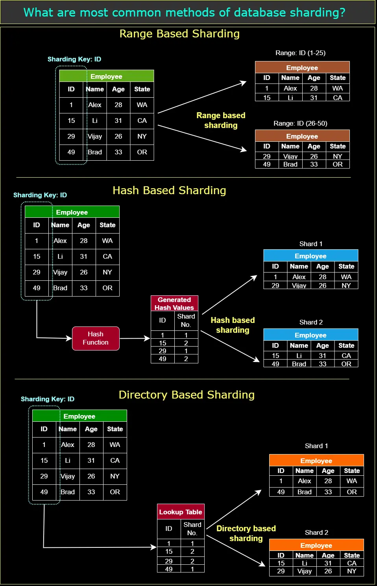
- Directory-based Sharding: - Directory-based sharding uses a lookup table, often referred to as a directory, to map each data entry to a specific shard. This method offers greater flexibility, as shards can be added, removed, or reorganized without the need to rehash or reorganize the entire dataset. However, it introduces an additional layer of complexity, as the directory must be maintained and kept consistent.
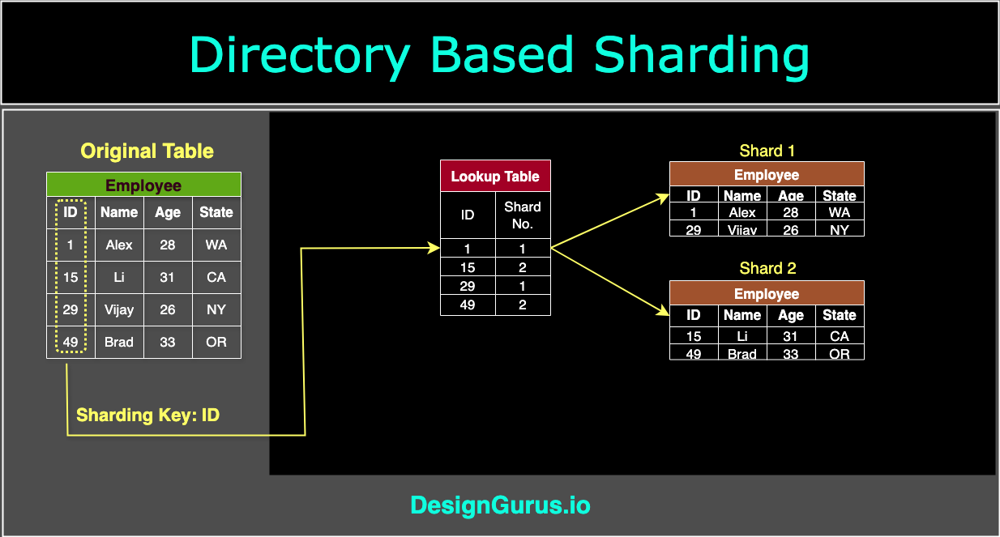
-
Geographical Sharding: - Geographical sharding involves partitioning data based on geographical locations, such as countries or regions. This method can help reduce latency and improve performance for users in specific locations by storing their data closer to them.
-
Dynamic Sharding: - Dynamic sharding is an adaptive approach that automatically adjusts the number of shards based on the data’s size and access patterns. This method can help optimize resource utilization and performance by creating shards as needed and merging or splitting them as the data grows or shrinks.
-
Hybrid Sharding: The Best of Many Worlds: - It might combine Geo-based with Directory-based sharding, or any other mix that suits a system's needs.
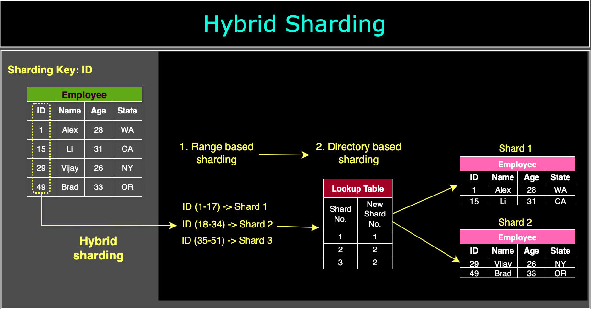
Benefits of Data Partitioning
Data partitioning offers a wide range of benefits that can significantly improve the performance, scalability, and resilience of data-driven systems.
-
Improved Query Performance: - When data is partitioned, queries can be targeted at specific partitions, enabling the system to retrieve only the necessary data
-
Enhanced Scalability: - Partitioning data across multiple storage resources allows for greater system scalability.
-
Load Balancing: - Data partitioning helps distribute the workload evenly across multiple storage nodes or servers
-
Data Isolation: - Partitioning data can provide a level of data isolation, where the failure or corruption of one partition does not necessarily impact the other partitions.
-
Parallel Processing: - Data partitioning enables parallel processing, where multiple partitions can be processed simultaneously by different processors or systems.
-
Storage Efficiency: - Frequently accessed data can be stored on faster, more expensive storage resources, while less critical data can be stored on cheaper, slower storage resources.
-
Simplified Data Management: - Data partitioning can make data management tasks, such as backup, archiving, and maintenance, more manageable and efficient
-
Better Resource Utilization: - By aligning the data with the appropriate storage and processing resources, organizations can maximize the performance and efficiency of their data-driven systems.
-
Improved Data Security: - By isolating sensitive data in separate partitions, organizations can implement stronger security measures for those partitions, minimizing the risk of unauthorized access or data breaches
-
Faster Data Recovery: - By focusing on recovering specific partitions rather than the entire dataset, organizations can reduce downtime and restore critical data more quickly.
Common Problems Associated with Data Partitioning
-
Complexity: - added complexity can lead to increased development and maintenance efforts, as well as a steeper learning curve for team members.
-
Data Skew: - data partitioning can result in uneven data distribution across partitions, known as data skew Data skew can result in reduced performance and resource utilization, negating the benefits of partitioning
-
Partitioning Key Selection: - Choosing the appropriate partitioning key is crucial for achieving the desired benefits of data partitioning. An unsuitable partitioning key can lead to inefficient data distribution, performance bottlenecks, and increased management complexity.
-
Cross-Partition Queries: - When queries need to access data across multiple partitions, performance can suffer, as the system must search through and aggregate data from several partitions.
-
Data Migration: - Partitioning can sometimes require significant data migration efforts, especially when changing partitioning schemes or adding new partitions. This can be time-consuming and resource-intensive, potentially causing disruptions to normal system operation.
-
Partition Maintenance: - As the data grows and evolves, organizations may need to reevaluate their partitioning strategies, which can involve repartitioning, merging, or splitting partitions. This can result in additional maintenance overhead and increased complexity
-
Cost: - Implementing a data partitioning strategy may require additional hardware, software, or infrastructure, leading to increased costs. Furthermore, the added complexity of managing a partitioned system may result in higher operational expenses.
Databases
index
Database indexes are designed to improve the speed and efficiency of data retrieval operations
Primary Index - The primary key is a column that uniquely identifies each row. the primary index improves read performance for identifying specific rows, with very little downside since every table usually needs a primary key.
SELECT * FROM Employees WHERE EmployeeID = 123 are very fast
Unique Index - A Unique Index ensures that all values in the indexed column are distinct. no two rows can have the same key value. A unique index functions like a regular index for lookup performance, but with the added rule that duplicate values are not allowed. Unique indexes speed up read queries just as non-unique indexes do, and in addition they guarantee data integrity by preventing duplicates.
SELECT * FROM Users WHERE Email = 'alice@example.com' are fast
Clustered Index
Non-Clustered Index
Composite Index
Full-Text Index
Hash Index